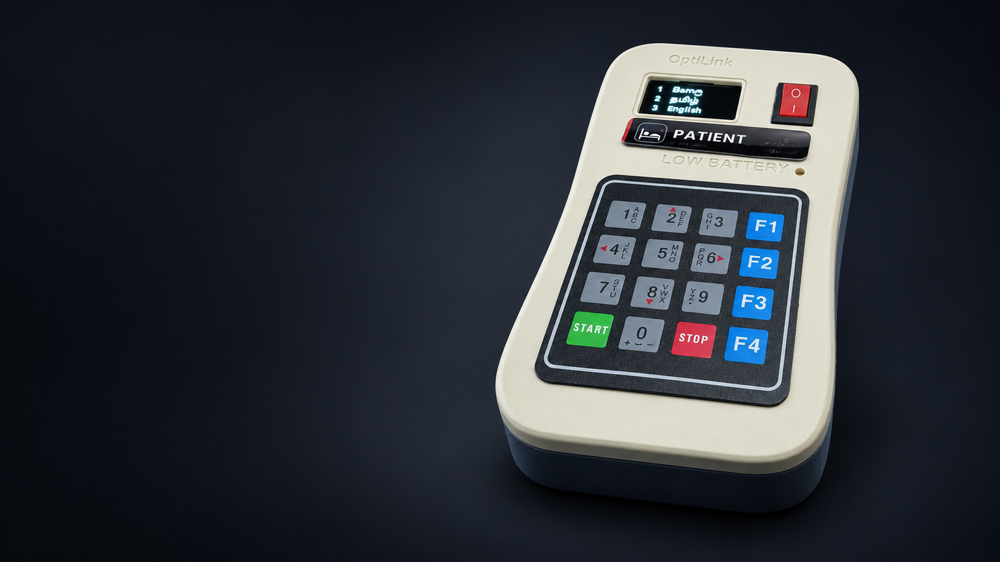
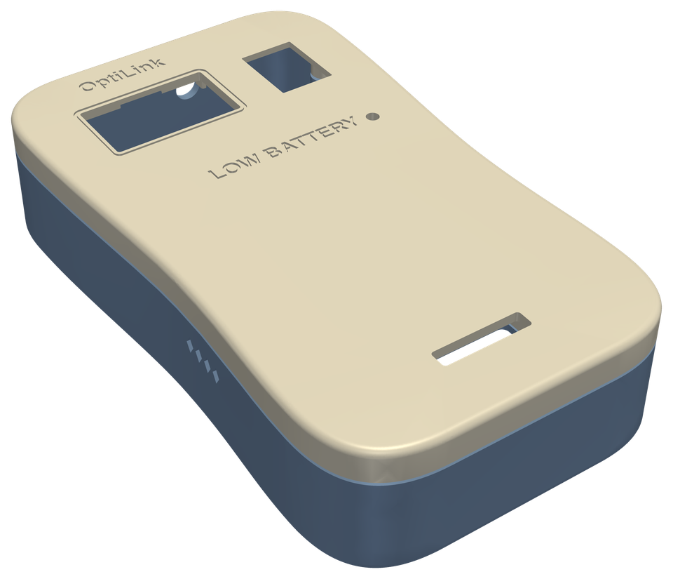
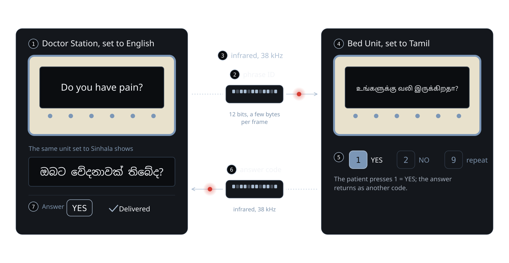
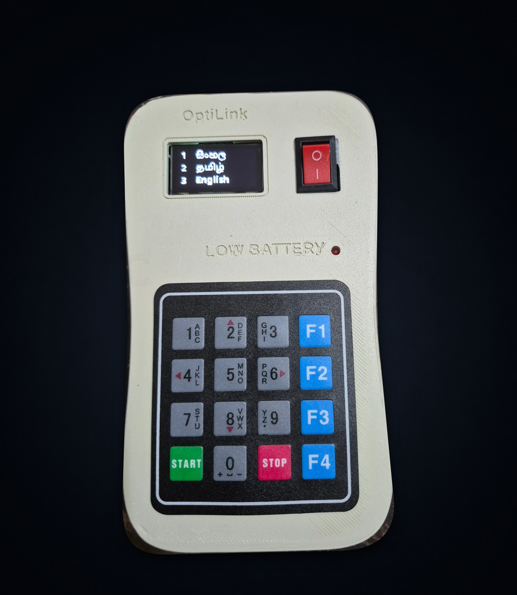
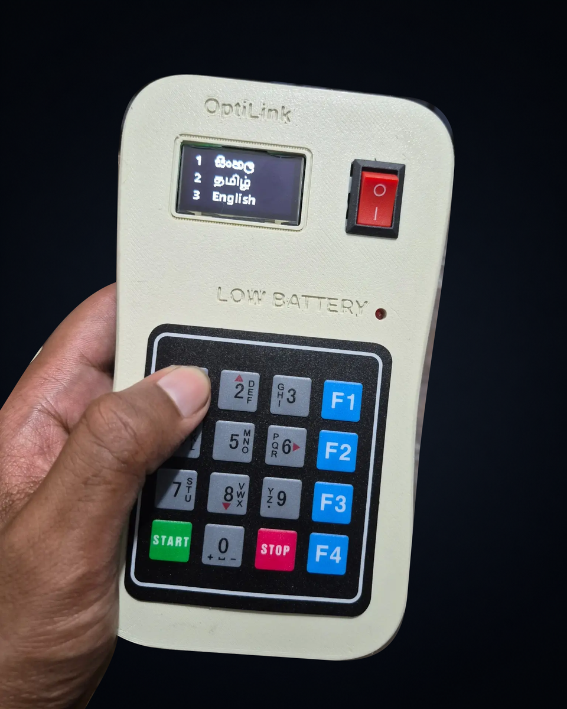
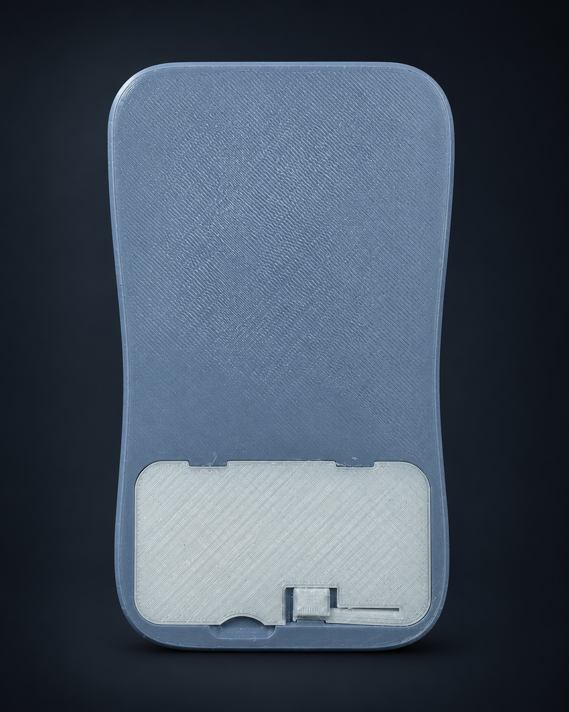
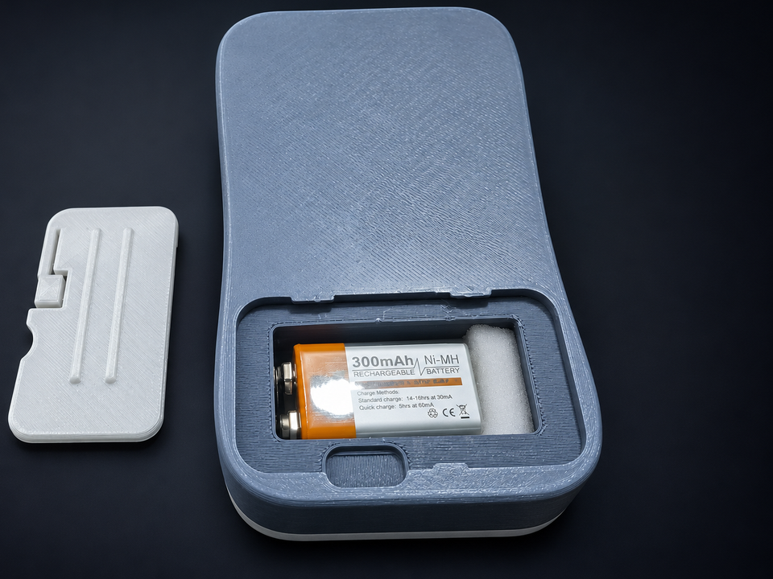
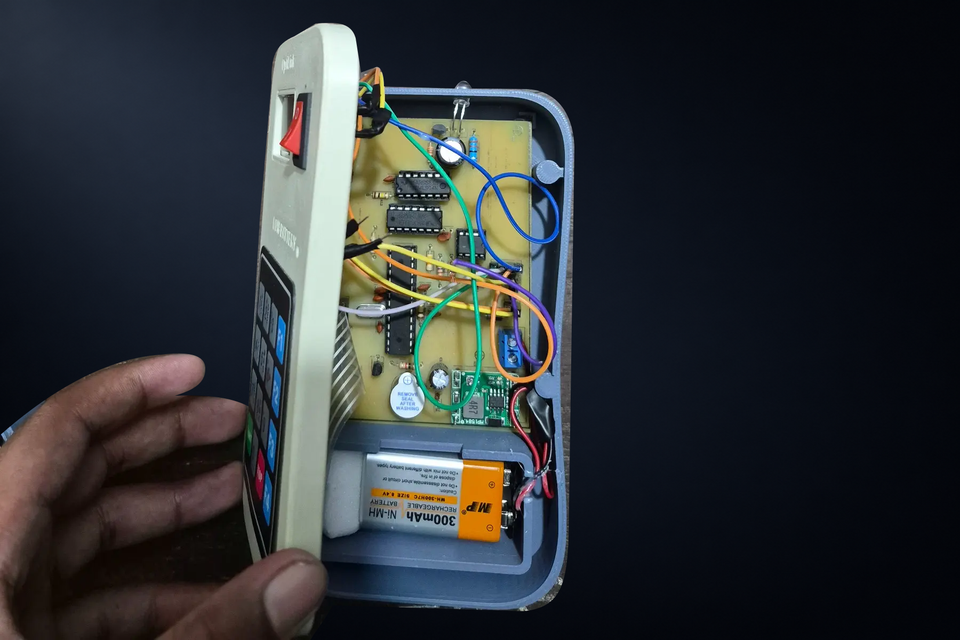
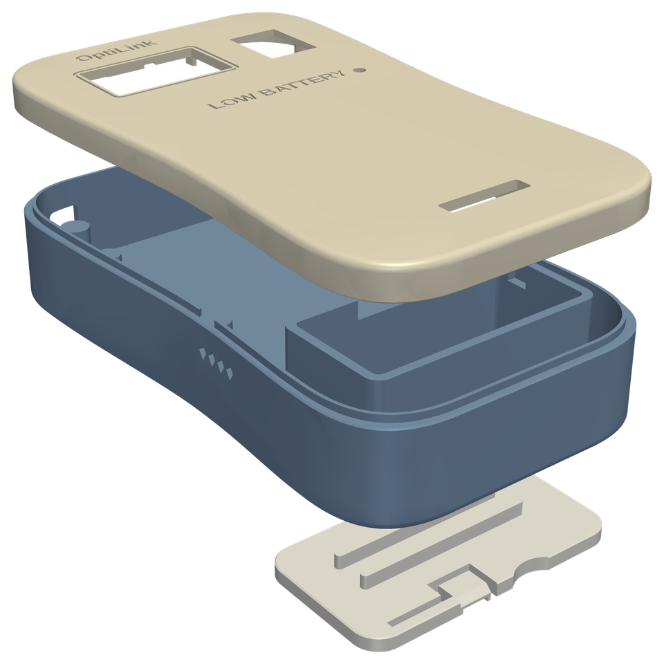

Talk across the isolation line.
A two-way infrared bedside communicator. Each person reads Sinhala, Tamil or English, with no network, no Wi-Fi and no radio.

You have the box. Start here.
Five steps from lid to first message.
Open the box: two units, a battery charger and a quick guide.
Find the stickers: DOCTOR on one unit, PATIENT on the other.
Switch each unit on with the rocker switch.
Choose your language on each unit's start screen. Each unit keeps its own.
Doctor Station: pick a bed and send a question. Bed Unit: press 1 for YES, 2 for NO, 7 to ask for help.
OptiLink
A two-way infrared bedside communicator
Department of Electrical and Electronic Engineering, Faculty of Engineering, University of Peradeniya.
EE356 Electronic Product Design and Manufacture.
Abstract
Doctors and patients in Sri Lankan wards often have to communicate without close contact, without a shared language and without a reliable network. OptiLink is a pair of identical hand-held units, a Doctor Station and a Bed Unit. The units never send words: they send a short phrase number over an infrared link, and each unit shows that phrase in its own language.

Four barriers, one bedside.
OptiLink was designed around all four at once.
One message, two languages.
The units never send words. They send a short phrase number, and each unit shows that phrase in its own language.
Doctor.
Selects bed 3 and sends “Do you have pain?” from across the room, reading Sinhala.
Bed Unit.
Beeps twice and shows the question in Tamil, the language chosen on that unit.
Patient.
Presses 1 (YES). The doctor's screen shows Delivered, then the answer.
Assessment.
The doctor runs the pain assessment: location, severity 0 to 10, duration, constant or not.
Report.
One English sentence: “Patient has pain in the chest, severity 6/10, for 1-3 days, constant.”
Request.
The patient later presses 7 and sends Water. The doctor replies “The nurse will come in 5 minutes”, read in Tamil.
The same phrase on three units
- EnglishDo you have pain?
- Sinhalaඔබට වේදනාවක් තිබේද?
- Tamilஉங்களுக்கு வலி இருக்கிறதா?
Infrared, 38 kHz; a phrase ID of 12 bits, a few bytes per frame.

Phrase-code flow
A number travels: a phrase ID crosses the infrared link and each unit shows it in its own language.
Every message is acknowledged; the sender sees Delivered, or NOT delivered.
How the link worksEight differences, one combination.
The parts are standard. What is new is how they work together.
3
languages on every unit
0
networks needed
14
Bed Units served by one Doctor Station
9 V
rechargeable NiMH battery per unit
Distance.
Routine questions and requests from across the room; no close contact.
Own language.
Each person reads Sinhala, Tamil or English at the same time, because just phrase numbers travel.
No network.
No Wi-Fi, SIM, radio, pairing or IT setup; one 9 V battery per unit.
Confirmed delivery.
Every message acknowledged; automatic resend; urgent alarm for Can't breathe.
Structured content.
Phrases checked in advance; assessments give an English sentence; the report survives switch-off.
Non-speaking patients.
Answer, rate pain and ask for help with single key presses.
One station, 14 beds.
Identical hardware for both roles, so spares are interchangeable.
Low cost, local.
Rs 5,676 per unit from Sri Lankan suppliers; socketed chips; reprintable case.
OptiLink supports, and does not replace, the ward's nurse-call system. It is an extra channel, not a safety-critical alarm.
See the unit.
The Doctor Station and the Bed Unit are the same hand-held unit.






Know before you gown.
See the request before putting on PPE.
A doctor and a patient exchange checked clinical questions, answers and urgent requests from across the room, each in Sinhala, Tamil or English, with no network, for about Rs 11,352 a pair to build (Rs 12,632 with the charger).
Build cost estimate, not a selling price.